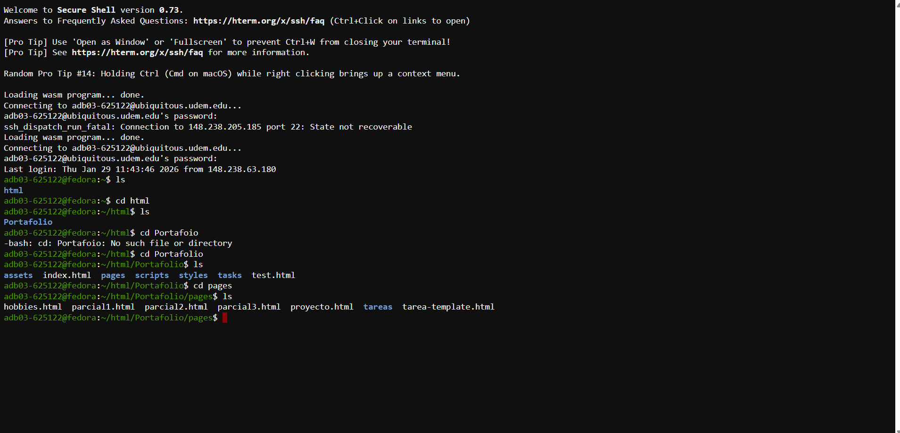
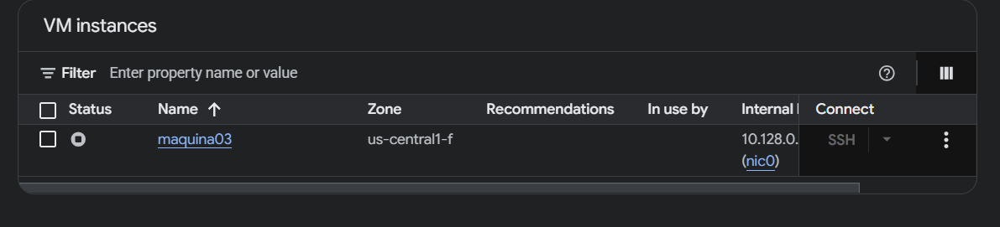
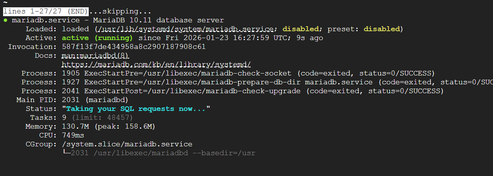

🎯 Objetivo
Comprender cómo acceder y usar Ubiquitous (servidor preconfigurado) y configurar una primera máquina virtual en Google Cloud Platform (GCP) con CentOS e instalación de MariaDB para bases de datos.
💡 Conceptos Clave
Ubiquitous
Servidor preconfigurado proporcionado por la institución. Permite acceso SSH con autenticación mediante matrícula universitaria.
Google Cloud Platform
Plataforma de computación en la nube de Google que proporciona máquinas virtuales, almacenamiento, redes y más.
SSH (Secure Shell)
Protocolo de seguridad criptográfico para acceso remoto cifrado a servidores con encriptación end-to-end.
Máquina Virtual (VM)
Emulación de software de una computadora física. Permite ejecutar un sistema operativo completo dentro de otro.
MariaDB
Sistema de gestión de bases de datos relacional de código abierto. Fork de MySQL que mejora compatibilidad y rendimiento.
CentOS
Sistema operativo Linux basado en Red Hat Enterprise Linux (RHEL). Estable y utilizado en servidores empresariales.
✓ Evidencia de Aprendizaje
Acceso SSH a Ubiquitous
Conexión exitosa y navegación en el servidor remoto mediante línea de comandos.
Creación de Máquina Virtual
Instancia de VM creada y configurada correctamente en Google Cloud Platform.
Instalación de CentOS
Sistema operativo Linux instalado y configurado en la máquina virtual.
Instalación de MariaDB
Servicio de base de datos activo y funcionando correctamente en la VM.
Configuración de Red
Conectividad y configuración de red completada para acceso remoto.
📸 Evidencia de Implementación
Carpetas en Ubiquitous
Estructura de directorios y archivos creados en el servidor Ubiquitous mediante acceso SSH:

Acceso SSH a ubiquitous.udem.edu.mx mostrando la estructura de archivos HTML creados
Creación de Máquina Virtual en Google Cloud
Instancia de VM "maquina03" configurada y ejecutándose en Google Cloud Platform:

VM instances en GCP - maquina03 activa en us-central1-f con IP interna 10.128.0.2
Instalación y Activación de MariaDB
Servicio de MariaDB versión 10.11 ejecutándose correctamente en la máquina virtual:

Estado del servicio mariadb.service - Active (running) con memoria en uso
📋 Conclusiones
📚 Aprendizajes Principales
He adquirido competencias en acceso remoto SSH, creación de máquinas virtuales en Google Cloud, instalación de sistemas operativos Linux y bases de datos MariaDB, así como conceptos fundamentales de infraestructura en la nube.
⚠️ Problemas Encontrados
Inicialmente la máquina virtual se configuró incorrectamente, impidiendo la instalación de MariaDB debido a una configuración de repositorios defectuosa. La solución fue crear una nueva instancia con parámetros correctos.
🎯 Áreas de Mejora
Profundizar en scripting bash, explorar opciones de seguridad avanzada, aprender infraestructura como código (IaC) con Terraform, y optimizar rendimiento de bases de datos.